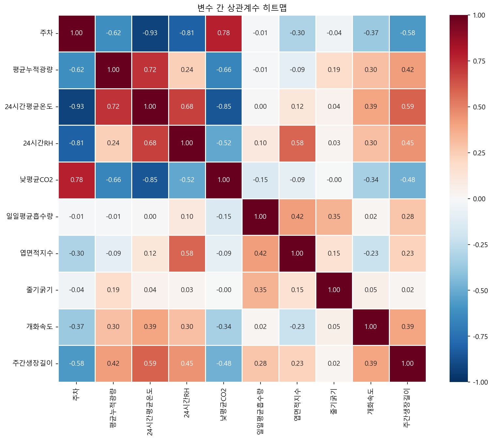
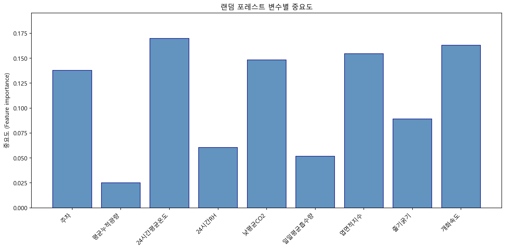

→ 빠진 데이터 자동 보완 + 농업 지표 자동 계산
(VPD · GDD · DLI · DIF · RTR)
(규칙→예측→강화학습)
VPD·GDD 연동
4대 병해 특화
출하 전략 지원
환경 제어: 온도·습도 자동 조절 · 생육 예측: 수확 시기·수량 예측 · 병해충 예측: 카메라로 병해 감지 · 수요 예측: 출하 타이밍·가격 예측
엔진 간 충돌 시 자동 조율
이상 없는 날은 알림 안 보냄
승인 → 온실 제어기 자동 반영
수정 이유가 AI 재학습 데이터
- 재배사 Ground Truth 입력률 > 80%
- AI 제안 채택률 > 50% (1작기 후)
- A급 비율 향상 또는 폐기율 감소
- 순수익 기준 모델 대비 +5% 이상
- Ground Truth 입력률 < 30%
- AI 제안을 매번 무시
- → 기술 문제가 아니라 UX 문제 → UI 재설계
개발 순서
1순위 — 데이터 자동 확보 체계
- Priva Read 파이프라인 구축 (센서 + 제어 이력)
- 작업 일지 표준화 (0/1 체크리스트)
- 파생변수 자동 산출 (VPD, GDD, DLI, DIF)
→ 이 단계 없이는 이후 모든 AI 개발 불가
2순위 — 환경 제어 AI
- Rule-based → MPC → RL 순서로 고도화
- 현재 Priva 데이터로 자동 온습도·환기 제어부터 시작
- RL은 섀도우 모드(실제 제어 없이 기록만)로 병행 운영
3순위 — 생육 예측 AI
- 데이터가 충분히 쌓인 후 RF/LightGBM 학습 시작
- 수확량 + 품질 등급 예측
→ 출하 시기 최적화와 연동
4순위 — 병해충 예측 (이미지 딥러닝)
- 카메라 기반 병해충 감지 (YOLOv8)
- 잎·과일 자동 분할 (SAM)
- 장기적으로 생육 데이터 수동 측정을 카메라·드론 자동 측정으로 전환
5순위 — 수요/출하 예측
- 경매 데이터(KAMIS) + 기상 예보 기반
- 출하 시기·물량 최적화
2단계 착수 전 1~2개월 내에 완료해야 할 항목. 각 항목의 결과가 2단계 계획에 반영됨.
1단계 — 즉시 실행 (1~2개월)
| 구분 | 항목 | 상세 내용 |
|---|---|---|
| 데이터 확보 | Priva 데이터 수동 다운로드 시작 | 매주 1회 이상 다운로드하여 데이터 축적. 자동 다운로드 가능 여부는 별도 확인 |
| 데이터 확보 | Priva 자동 다운로드(API 서비스) 가능 여부 확인 | 현재 버전에서 애드온(PI 서비스 등) 설치로 자동 수집이 가능한지 확인. 비용 발생 여부도 확인. IT팀과 협의 필요 |
| 데이터 확보 | 외부 데이터(농진청 등) 샘플 다운로드 | 텍스트 데이터 위주로 샘플을 받아 구조 확인 후 활용 가능 여부 판단. 이미지 데이터는 후순위 |
| 모델 분석 | 기존 공개 모델 Input/Output 정리 | TOMGRO 등 공개 모델들의 X값(Input)과 Y값(Output)을 정리. 각 항목별로 현재 측정 가능 여부(Priva 자동 / 수기 / 센서 필요 / 측정 불가)를 함께 표기 |
| 비전/측정 | 드론 촬영 테스트 | 온실 내 드론 비행 가능 여부 확인. 생장 길이 등 위에서 측정 가능한 항목 파악 |
| 비전/측정 | 2D 이미지 라벨링 테스트 | 휴대폰으로 작물 촬영(50~100장) 후 라벨링하여 비전 모델 가능성 확인. 소량 테스트 결과에 따라 대량 작업 여부 판단 |
| 비전/측정 | 측정 로봇/이동 장치 방안 조사 | 드론으로 촬영하기 어려운 하단부 측정을 위한 방법 조사. 바퀴 달린 촬영 장치, 리프트 활용, 외부 업체 제작 가능성 등 |
| 외부 협력 | AI 전문 업체 자문 검토 | 시크(부산 AI 업체) 등에 현재 계획을 공유하고 피드백 요청 가능 여부 검토 |
Priva Read 파이프라인 구축
필수 +무엇을 하는가
Priva 온실 제어기에서 센서 데이터(온도, 습도, CO2, 광량, 관수량)를 5분 간격으로 자동 수집하는 시스템을 구축합니다.
왜 하는가
AI가 학습하려면 데이터가 필요합니다. 현재는 사람이 수동으로 주 1회 기록하고 있으며, 자동 수집 없이는 AI 개발 자체가 불가능합니다.
어떻게 하는가
Priva 시스템의 데이터 내보내기 기능을 활용하고, Python 스크립트로 DB에 자동 적재합니다.
산출물
5분 단위 실시간 환경 데이터가 DB에 자동 저장되는 파이프라인
결측치 보간 + 파생변수 산출
필수 +무엇을 하는가
센서 고장이나 통신 장애로 빠진 데이터를 자동 복구하고, VPD(포차), GDD(생육도일), DLI(일적산광량) 등 핵심 지표를 실시간 계산합니다.
왜 하는가
센서 고장이나 통신 장애로 빠진 데이터를 그대로 두면 모델이 잘못된 패턴을 학습함. GDD 등 파생변수는 환경 제어 모델의 기본 입력값.
어떻게 하는가
선형 보간과 이동평균으로 결측치를 복원하고, Python 모듈로 파생변수를 자동 계산합니다.
산출물
결측 없는 깨끗한 데이터 + VPD / GDD / DLI / DIF / RTR 자동 산출 모듈
센서 드리프트 감지
필수 +무엇을 하는가
센서가 서서히 오차가 커지는 현상(드리프트)을 자동으로 감지하여 경고합니다.
왜 하는가
센서 오차가 쌓이면 모델이 잘못된 패턴을 학습함. 캘리브레이션 주기를 놓치지 않도록 자동 감지 필요.
어떻게 하는가
내부 센서값과 기상청 외부 데이터를 교차 검증하고, 이상 감지 시 대시보드에 알림을 표시합니다.
산출물
센서 신뢰도 모니터링 + "캘리브레이션 필요" 자동 알림 시스템
KAMIS API + 기상청 API 연동
필수 +무엇을 하는가
도매시장 실시간 시세와 기상청 예보 데이터를 자동으로 수집합니다.
왜 하는가
AI가 "언제 수확하고 어디로 출하할지" 판단하려면 시장 가격과 날씨 예보 데이터가 필요합니다.
어떻게 하는가
KAMIS Open API와 기상청 동네예보 API를 연동하여 일 배치로 수집하고, DB에 저장합니다.
산출물
일별 도매 시세 + 시간별 기상 예보 데이터 자동 축적 시스템
YOLOv8 4대 병해 특화 모델 학습
필수 +무엇을 하는가
카메라로 온실 내 식물을 촬영하여 잿빛곰팡이, 흰가루병, 총채벌레, 온실가루이 4가지 병해충을 자동 탐지하는 AI를 학습시킵니다.
왜 하는가
병해충은 초기에 발견해야 피해를 최소화할 수 있습니다. 사람 눈으로 넓은 온실을 매일 점검하는 것은 현실적으로 불가능합니다.
어떻게 하는가
YOLOv8 모델에 PlantVillage 공개 데이터와 자체 촬영 데이터를 결합하여 5개 클래스(4종 병해 + 정상)를 학습시킵니다.
산출물
병해 탐지 데모 + 실시간 알림 프로토타입
비상 제어 시스템 구현
필수 +무엇을 하는가
AI와 완전히 독립적으로, 온실이 위험한 상태가 되면 자동으로 비상 조치를 취하는 안전장치를 구현합니다.
왜 하는가
AI 장애 또는 오작동 시에도 온실 환경이 안전하게 유지되어야 함.
어떻게 하는가
PLC에 직접 입력: 온도 > 35°C 강제 환기, 습도 > 95% 제습, CO₂ > 1500ppm 주입 차단.
산출물
AI와 독립적으로 작동하는 비상 안전 시스템
기준 모델 구축
필수 +무엇을 하는가
가장 단순한 예측 모델(이동평균)을 만들어서 모든 AI 모델의 비교 기준으로 사용합니다.
왜 하는가
후속 모델의 성능이 개선됐는지 판단하려면 비교 기준점이 있어야 함.
어떻게 하는가
이동평균과 Seasonal Naive 모델을 구축.
산출물
후속 모델 성능 비교 기준선
엣지 서버 세팅 + 테스트 데이터 생성기
필수 +무엇을 하는가
온실 현장에 설치할 소형 서버(Jetson Orin)를 준비하고, 실제 센서 연결 전까지 가짜 데이터로 시스템을 테스트합니다.
왜 하는가
센서 연결 전에 시스템 동작 검증 필요. 인터넷 단절 시에도 현장 서버가 있어야 기본 제어 가능.
어떻게 하는가
Jetson Orin에 Docker 환경을 구축하고, Python으로 5분 단위 가짜 센서 데이터를 생성합니다.
산출물
현장 서버 + 테스트용 가짜 데이터 흐름
데이터가 흐르는 파이프라인 + 병해 탐지 데모
Rule-based 환경 제어
필수 +무엇을 하는가
"온도 28도 넘으면 환기, 습도 90% 넘으면 제습"과 같은 전문가 경험 규칙을 코드로 구현합니다.
왜 하는가
처음부터 RL을 적용하면 문제가 생겼을 때 원인 파악이 어려움. 규칙 기반 제어로 먼저 데이터와 시스템 안정성을 확인.
어떻게 하는가
재배 전문가의 설정값을 if-else 로직으로 구현하고, 30분 주기로 실행합니다(고온 시 10분 주기).
산출물
규칙 기반 자동 제어 시스템 + 데이터 로깅
RL 섀도우 모드 가동
필수 +무엇을 하는가
강화학습(RL) AI가 실제 제어 없이 "내가 이렇게 했을 텐데"만 기록하는 모드를 가동합니다.
왜 하는가
RL을 사전 검증 없이 실전에 적용하면 작물 피해로 이어질 수 있음.
어떻게 하는가
RL 에이전트가 매 30분마다 제안값을 생성하고, 실제 적용값과의 차이(delta)를 DB에 저장합니다.
산출물
RL 학습 데이터 축적 + "RL 제안 vs 실제" 비교 리포트
엔진 간 조율 로직
필수 +무엇을 하는가
4개 AI 엔진이 서로 충돌하는 제안을 할 때 어떤 엔진의 말을 들을지 결정하는 로직을 구현합니다.
왜 하는가
엔진1이 "가스비 아끼려면 야간 온도를 낮춰라"하고 엔진2가 "수확 맞추려면 야간 온도를 유지해라"하면 충돌합니다. 시스템이 멈추면 안 됩니다.
어떻게 하는가
우선순위를 하드코딩합니다: 생존 > 품질/수확량 > 환경제어 > 비용절감 순서입니다.
산출물
엔진 충돌 자동 해소 로직
적응형 제어 주기
필수 +무엇을 하는가
평상시에는 30분 간격, 고온 경보 시에는 10분 간격으로 자동 전환되는 제어 시스템을 만듭니다.
왜 하는가
한여름 직사광선 조건에서 30분 간격으로는 고온 피해에 늦게 대응할 수 있습니다. 상황에 따라 즉각 대응이 필요합니다.
어떻게 하는가
일사량과 온도 임계값을 감지하여 제어 주기를 자동으로 단축합니다.
산출물
상황 적응형 제어 시스템
재배사 대시보드 (검증 UI)
필수 +무엇을 하는가
재배사가 매일 AI 제안을 확인하고, 승인 또는 수정하고, 실제 결과를 입력하는 웹 대시보드를 구축합니다.
왜 하는가
AI를 무조건 신뢰할 수 없으므로 사람이 검증하는 단계가 필수입니다. "AI가 제안했지만 사람이 수정한 이유"가 가장 값비싼 학습 데이터입니다.
어떻게 하는가
React 기반으로 AI 제안 vs 현재값 비교 테이블, A/B 테스트 차트, Ground Truth 입력 폼을 구현합니다.
산출물
재배사가 매일 사용하는 대시보드
LLM 리포트 생성
선택 +무엇을 하는가
4개 엔진의 분석 결과를 농부가 이해할 수 있는 한국어 보고서로 자동 변환합니다.
왜 하는가
"VPD 0.87에서 1.02로 조정"이라는 지표를 "곰팡이 위험이 증가했습니다. 환기를 10% 올리세요"로 바꿔야 현장에서 실제로 사용됩니다.
어떻게 하는가
Claude API에 확정된 JSON만 전달하여 번역만 수행합니다. 이상 이벤트가 없는 날은 호출하지 않아 비용을 최적화합니다.
산출물
일일 AI 브리핑 리포트
엣지 Fallback
필수 +무엇을 하는가
인터넷이 끊겨도 기본적인 환경 제어를 유지하는 독립 시스템을 구축합니다.
왜 하는가
농장에서 인터넷은 자주 끊깁니다. 클라우드에만 의존하면 네트워크 장애 시 제어가 멈출 수 있습니다.
어떻게 하는가
현장 Jetson에 경량 Rule-based와 기본 MPC를 상주시키고, 네트워크 복구 시 데이터를 일괄 동기화합니다.
산출물
오프라인에서도 작동하는 엣지 제어 시스템
재배사가 매일 쓰는 대시보드 + 1작기 데이터
TOMGRO 생육 수식 이식
필수 +무엇을 하는가
토마토 전용 생육 시뮬레이션 수식을 Python에 이식하여, AI가 비현실적 제안을 할 때 필터링합니다.
왜 하는가
AI(RL)가 "온도 40도로 올려라" 같은 비현실적 제안을 할 수 있습니다. 식물 생리학 기반 수식으로 "이건 말이 안 된다"고 걸러내야 합니다.
어떻게 하는가
TOMGRO 논문의 수식을 Python 함수로 구현하여 AI 제안값의 유효성을 검사합니다.
산출물
생육 기반 필터링 모듈
예측 모델 파인튜닝
필수 +무엇을 하는가
1작기 데이터를 기반으로 생육 예측 모델을 우리 온실에 맞게 조정합니다.
왜 하는가
범용 모델은 우리 온실의 특성(품종, 지역 기후, 시설 규모)을 모릅니다. 실제 데이터로 맞춤 조정해야 정확도가 올라갑니다.
어떻게 하는가
기준 모델(이동평균)을 먼저 이기는지 확인한 후 채택합니다. 못 이기면 기준 모델을 유지합니다.
산출물
우리 온실 맞춤 수확량 예측 모델
가격 예측 + 출하 스케줄 연동
필수 +무엇을 하는가
도매 시세 예측에 경매장 휴무일, 직거래처 납품 일정을 결합하여 "언제 수확해서 어디로 보내라"까지 안내합니다.
왜 하는가
농사는 기르는 게 반, 파는 게 반입니다. 수확 타이밍이 하루만 어긋나도 가격이 크게 달라집니다.
어떻게 하는가
비교 검증으로 선택한 예측 모델에 유통사 납품 스케줄 DB를 연동합니다.
산출물
출하 전략 포함 가격 예측 시스템
MPC 도입
필수 +무엇을 하는가
모델 예측 제어(MPC)를 도입하여 안전 범위 내에서 보수적으로 환경을 제어합니다.
왜 하는가
Rule-based는 단순 if-else라 최적화가 되지 않습니다. MPC는 "2시간 후 예측"을 기반으로 미리 대응하여 더 정밀한 제어가 가능합니다.
어떻게 하는가
Python MPC 라이브러리를 활용하고, 온도, 습도, CO2 안전 제약 조건을 설정합니다.
산출물
예측 기반 환경 제어 시스템
자동 재학습 트리거
필수 +무엇을 하는가
AI 예측이 일정 수준 이상 틀리면 자동으로 모델을 재학습시키는 시스템을 구축합니다.
왜 하는가
봄에 학습한 모델이 가을에는 정확도가 떨어집니다(Concept Drift). 계절과 환경 변화에 맞춰 모델도 업데이트되어야 합니다.
어떻게 하는가
수확량 예측 오차가 15%를 초과하는 상태가 3일 연속되면, 클라우드 A100에서 자동 재학습 후 검증을 거쳐 모델을 교체합니다.
산출물
MLOps 자동 재학습 파이프라인
예측 모델 + MPC 제어 + 2작기 실적 데이터
부산LAB에서 진행할 "재배사 vs AI" 비교 재배 실험의 사전 협의 사항을 정리한 문서입니다. 본 실험은 2단계(모델 구축 및 검증) 이후 실행을 전제로 하며, AI 추천 모델이 준비된 시점에 아래 항목들을 재배사와 협의하여 확정합니다.
전제 조건
| 항목 | 내용 |
|---|---|
| 실험 목적 | 재배사 경험 기반 환경 관리 vs AI 추천 기반 환경 관리, 최종 수확량 및 품질 비교 |
| 실험 구도 | 부산LAB 온실 4개 중 2개를 배정하여 재배사 온실 vs AI 온실 운영 |
| AI 작업 지시 | 불가. 개체 수준 실시간 모니터링 인프라 없음. 재배 작업은 양쪽 동일 기준 고정 |
| Priva 연동 | API 없음 (구버전, 로컬 PC 구동). AI 추천값을 담당자가 수동 입력 |
| Priva 로깅 | 5분 간격 자동 기록, 데이터 추출은 수동 다운로드 |
| 양액 분석 | 외부 기관 의뢰 (결과 수령 1~2주 소요). AI 실시간 양액 조성 제안 불가, 사후 검증용으로 활용 |
| 실내 일사량 센서 | 없음. 외부 일사량만 사용 |
| 배액 데이터 | 수기 측정, 1일 1회 |
| 온실 간 설비 | 4개 온실 동일 |
1. 실험 설계
| 항목 | 의사결정 내용 | 제안 |
|---|---|---|
| 작물·품종 | 어떤 작물, 어떤 품종으로 할 건지 | 미니오이 권장. 작기 3개월로 짧아 문제 발생 시 다음 작기에서 보정 가능. 기존 2~3작기 재배 데이터가 있어 모델 학습에 활용 가능 |
| 온실 배정 | 4개 중 어떤 2개를 쓸 건지. 현재 1·2번, 2·3번 온실이 각각 관수 구역으로 묶여 있음 | 1번 온실 선호. 2번은 3번과 관수 구역이 묶여 있어 별도 제어가 어려움. 관수 구역 분리 가능 여부 확인 필요 |
| 정식 조건 | 정식일, 재식 밀도, 묘 규격 통일 여부 | 전부 동일하게 고정. 여기서 차이가 나면 환경 제어 효과를 분리할 수 없음 |
| 실험 기간 | 1작기 vs 복수 작기 | 1작기(3개월) 파일럿 후 결과에 따라 2작기 반복 여부 판단 |
2. AI 제어 운영 방식
| 항목 | 의사결정 내용 | 제안 |
|---|---|---|
| AI 제어 항목 범위 | 환경만 vs 환경+관수 전부 | 환경(온도·습도·CO₂) + 관수(급액량·횟수·EC·pH) 전부 AI 제안. 작기 3개월로 짧아 문제 발생 시 다음 작기에서 보정 가능 |
| 설정값 반영 주기 | 하루 몇 회 수동 입력 | 1일 2회(오전/오후) 권장. 주간·야간 설정이 다르므로 최소 2회 필요, 그 이상은 담당자 부담 과중 |
| 설정값 반영 담당자 | 재배사 본인 vs 별도 담당자 | 별도 담당자(프로젝트팀 측) 권장. 재배사가 직접 입력하면 AI 추천값을 임의 수정할 가능성 있음 |
| AI 추천값 전달 방식 | 대시보드, 메신저, 출력물 등 | 초기에는 카카오톡 또는 간단한 웹 대시보드. 별도 시스템 개발보다 빠르게 운영 가능한 방식 우선 |
| AI 모델 데이터 출처 | 자체 데이터 vs 외부 데이터 | 자체 데이터 기반 모델 우선 구축. 미니오이 2~3작기 + Priva 2년치 보유. 외부 데이터(농진청 등)는 성능 보강 시 2순위 활용 |
| AI 이상값 안전장치 | 비정상 추천값 차단 기준 | 항목별 상한·하한을 재배사와 사전 설정 (예: EC 범위 밖 추천 → 자동 무시, 급액량 전일 대비 ±20% 초과 시 담당자 확인 후 반영) |
3. 재배사 측 운영 조건
| 항목 | 의사결정 내용 | 제안 |
|---|---|---|
| 재배사 관리 방식 | 자유 운영 vs 표준 프로토콜 | 재배사 자유 운영 권장. "현장 경험 vs AI"를 비교하는 게 목적이므로 재배사 역량이 그대로 반영되어야 의미 있음 |
| AI 온실 정보 공개 여부 | 재배사에게 AI 온실 데이터 공개 여부 | 공개. 첫 작기이므로 재배사와 데이터를 공유하면서 운영하는 것이 현실적 |
4. 재배 작업 통일 기준
| 항목 | 의사결정 내용 | 제안 |
|---|---|---|
| 통일할 작업 목록 | 어떤 작업들을 동일 기준으로 고정할 건지 | 적엽·적과·유인·적심·수분(꽃 떨기) 전부 통일. 환경 제어 효과만 순수하게 보려면 재배 작업 변수는 최대한 제거 |
| 작업 기준 설정 주체 | 재배사 vs 프로젝트팀 vs 합의 | 재배사 주도로 기준 설정하되 프로젝트팀과 사전 합의. 재배사 현장 감각이 현실적이고 협조 확보에도 유리 |
| 작업자 배정 | 동일인 vs 각각 배정 | 동일 작업자가 양쪽 모두 담당 권장. 숙련도 차이 제거 필요 |
5. 데이터 수집 및 평가
5-1. AI Input 데이터
Priva 환경 데이터 (5분 간격 자동 로깅)
| 항목 | 단위 |
|---|---|
| 실내 온도 | ℃ |
| 실내 습도 | % |
| 실내 CO₂ 농도 | ppm |
| 외기 온도 | ℃ |
| 외기 습도 | % |
| 외부 일사량 | W/m² |
| 환기창 개도 | % |
| 난방관 온도 | ℃ |
| 풍속 | m/s |
관수 데이터 (Priva 또는 별도 계측)
| 항목 | 단위 | 수집 주기 |
|---|---|---|
| 급액량 | mL/회 | 매 급액시 |
| 급액 EC | dS/m | 매 급액시 |
| 급액 pH | — | 매 급액시 |
| 급액 횟수 | 회/일 | 일별 |
| 배액량 | mL | 수기 1일 1회 |
| 배액 EC | dS/m | 수기 1일 1회 |
| 배액 pH | — | 수기 1일 1회 |
양액 성분 조성 (급액·배액·배지 내, 외부 의뢰 분석)
| 항목 | 단위 | 수집 주기 | 비고 |
|---|---|---|---|
| 다량원소: NO₃⁻, NH₄⁺, H₂PO₄⁻, K⁺, Ca²⁺, Mg²⁺, SO₄²⁻ | me/L | 급액: 조성 변경 시 / 배액·배지 내: 주 1회 | AI 실시간 제안 불가, 사후 검증 및 다음 작기 보정용 |
| 미량원소: Fe, Mn, Zn, B, Cu, Mo | ppm | 〃 | 〃 |
| 배지 내 EC | dS/m | 주 1회 | 〃 |
| 배지 내 pH | — | 주 1회 | 〃 |
생육 조사 (수기, 주 1회)
| 항목 | 단위 |
|---|---|
| 초장 | cm |
| 경경 (줄기 직경) | mm |
| 엽수 | 매 |
| 엽장·엽폭 | cm |
| 마디 수 | 개 |
| 착과 수 | 개 |
| 과실 비대 상태 | cm 또는 정성 |
5-2. AI Output 데이터 (제안값)
환경 제어
| 제안 항목 | 단위 |
|---|---|
| 주간 목표 온도 | ℃ |
| 야간 목표 온도 | ℃ |
| 목표 습도 | % |
| CO₂ 목표 농도 | ppm |
| 환기창 개도 | % (Priva 연동 구조 확인 필요) |
관수 제어
| 제안 항목 | 단위 |
|---|---|
| 1회 급액량 | mL/주 |
| 일일 급액 횟수 | 회 |
| 급액 EC | dS/m |
| 급액 pH | — |
| 목표 배액률 | % |
5-3. 평가 지표
| 항목 | 의사결정 내용 | 제안 |
|---|---|---|
| 수확량 측정 기준 | 어떤 기준으로 비교할 건지 | 총 수확량(kg) + 등급별 상품과율 + 단위 면적당 환산 모두 측정 |
| 비상품과 기록 | 기형과·병과 등 원인 기록 여부 | 기록 권장. 환경 조건과 품질 저하 상관관계 분석 가능 |
| 생육 조사 담당 | 조사자 통일 여부 | 동일인이 양쪽 조사 권장. 측정자 간 편차 제거 |
| 환경 데이터 로깅 | 양쪽 온실 동일 설정 여부 | 동일 항목, 동일 5분 간격으로 세팅 확인 필요 |
| 에너지·비용 비교 | 비교 지표 포함 여부 | 포함 권장. 난방 가스·전력 사용량 계량. 수확량이 비슷해도 에너지 절감이면 성과 |
6. 리스크 관리
| 항목 | 의사결정 내용 | 제안 |
|---|---|---|
| 병해충 발생 시 대응 | 동일 방제 vs 개별 판단 | 양쪽 동일 방제 권장. 방제 방식이 다르면 수확량 차이에 영향이 크기 때문에 환경 제어 효과만 비교하기 어려움 |
| 설비 고장 시 처리 | 실험 중단 vs 임시 전환 | 센서 고장은 48시간 이내 복구 기준, 초과 시 해당 기간 데이터 제외. 실험 자체는 계속 진행 |
7. 사전 확인 필요 항목
| 확인 항목 | 내용 |
|---|---|
| 기존 데이터 실험 조건 기록 | 과거 2~3작기에서 일반 재배와 다르게 실험한 내용의 기록 유무 확인 필요. 모델 학습 시 이상치 판별에 필요 |
용어 설명
이 프로젝트에서 사용하는 전문 용어를 일반인도 이해할 수 있도록 정리했습니다. 본문에서 점선 밑줄이 있는 단어에 마우스를 올리면 설명이 표시됩니다.
데이터 검증
1-1. 학습 데이터 구성
외부 AI 모델을 도입하기 전에, 우리 온실 데이터에 실제로 패턴이 존재하는지 확인하기 위해 자체 데이터로 머신러닝 PoC(개념 검증) 실시
| 주차 | 평균누적광량 | 낮평균온도 | 야간평균온도 | 24시간평균온도 | 낮RH | 야간RH | 24시간RH | 낮평균CO2 | 일일평균흡수량 | 주간생장길이 | 엽면적지수 | 줄기굵기 | 개화속도 | 수확량 |
|---|---|---|---|---|---|---|---|---|---|---|---|---|---|---|
| 1 | 2783.285 | 29.085 | 24.657 | 27.571 | 82.885 | 86.557 | 84.257 | 417.671 | 672.857 | 29.000 | 2.000 | 11.200 | 2.400 | 0.0 |
| 2 | 2569.571 | 29.328 | 23.971 | 27.014 | 84.714 | 87.100 | 85.514 | 413.471 | 641.428 | 28.666 | 3.799 | 11.933 | 0.966 | 0.0 |
| 3 | 1383.142 | 28.242 | 24.742 | 26.828 | 85.742 | 89.671 | 87.542 | 433.614 | 745.000 | 27.166 | 2.008 | 12.666 | 2.033 | 0.0 |
| 4 | 2060.285 | 29.028 | 24.042 | 26.514 | 81.771 | 88.485 | 84.985 | 435.957 | 617.142 | 30.333 | 2.974 | 10.143 | 1.066 | 13.0 |
| 5 | 2406.142 | 30.457 | 25.385 | 28.057 | 79.014 | 89.100 | 83.785 | 432.675 | 833.333 | 28.166 | 4.198 | 10.466 | 1.266 | 247.7 |
| 6 | 2065.428 | 29.714 | 24.600 | 27.385 | 79.942 | 88.899 | 84.028 | 435.385 | 660.285 | 26.333 | 2.304 | 11.110 | 1.333 | 220.1 |
| 7 | 1883.285 | 29.214 | 24.014 | 26.642 | 81.885 | 87.957 | 84.500 | 425.542 | 648.000 | 22.833 | 2.616 | 10.443 | 1.933 | 300.4 |
| 8 | 1279.000 | 27.071 | 22.657 | 25.042 | 81.942 | 88.342 | 85.085 | 437.557 | 758.761 | 27.000 | 3.128 | 10.053 | 0.966 | 32.5 |
| 9 | 1430.571 | 27.100 | 22.242 | 24.800 | 81.771 | 91.128 | 86.171 | 444.942 | 676.571 | 27.333 | 3.060 | 9.936 | 1.233 | 188.3 |
| 10 | 1345.428 | 26.514 | 22.600 | 24.485 | 82.428 | 89.342 | 86.071 | 439.257 | 817.428 | 28.333 | 4.753 | 10.400 | 0.966 | 247.0 |
| 11 | 1215.000 | 25.914 | 21.985 | 23.942 | 80.542 | 91.885 | 86.071 | 450.000 | 1082.333 | 29.666 | 4.835 | 11.120 | 0.733 | 201.2 |
| 12 | 1068.571 | 25.885 | 21.457 | 23.714 | 81.971 | 93.100 | 87.385 | 441.514 | 1075.000 | 29.333 | 4.388 | 11.013 | 1.699 | 175.0 |
| 13 | 741.428 | 24.871 | 20.828 | 22.957 | 86.100 | 93.399 | 89.871 | 450.357 | 745.666 | 22.000 | 4.172 | 10.000 | 1.200 | 270.9 |
| 14 | 1194.142 | 22.657 | 17.557 | 20.014 | 77.542 | 89.785 | 84.242 | 457.285 | 994.333 | 24.666 | 4.139 | 9.890 | 1.600 | 248.5 |
| 15 | 1486.000 | 23.120 | 17.300 | 20.020 | 77.340 | 85.700 | 81.880 | 467.320 | 912.666 | 18.833 | 4.975 | 13.933 | 0.699 | 294.6 |
| 16 | 1104.000 | 23.816 | 18.666 | 21.050 | 83.883 | 89.966 | 87.050 | 490.850 | 650.380 | 20.333 | 4.942 | 11.523 | 0.800 | 348.4 |
| 17 | 1217.428 | 23.857 | 18.742 | 21.028 | 82.428 | 87.571 | 85.271 | 495.157 | 766.000 | 24.166 | 3.027 | 11.220 | 1.600 | 214.3 |
| 18 | 1290.142 | 23.642 | 18.771 | 20.914 | 82.571 | 83.114 | 83.700 | 474.028 | 736.666 | 23.833 | 3.631 | 11.356 | 1.066 | 315.3 |
| 19 | 1051.285 | 23.700 | 18.085 | 20.442 | 83.385 | 88.185 | 86.285 | 526.871 | 609.142 | 24.166 | 4.499 | 11.733 | 0.900 | 580.7 |
| 20 | 1160.428 | 23.085 | 17.728 | 19.971 | 81.114 | 78.628 | 79.914 | 492.442 | 638.000 | 24.000 | 2.907 | 10.333 | 0.966 | 184.2 |
| 21 | 965.714 | 22.828 | 17.685 | 19.871 | 80.214 | 77.114 | 78.771 | 508.699 | 608.285 | 27.166 | 2.575 | 10.333 | 1.333 | 384.8 |
| 22 | 867.285 | 22.871 | 18.000 | 19.961 | 79.257 | 77.214 | 78.371 | 486.428 | 525.714 | 21.000 | 2.545 | 9.813 | 1.166 | 312.6 |
| 23 | 1000.142 | 21.957 | 17.642 | 19.357 | 73.042 | 70.142 | 70.885 | 488.228 | 578.571 | 24.500 | 2.765 | 9.690 | 1.233 | 374.2 |
| 24 | 1078.000 | 20.685 | 16.828 | 18.371 | 75.628 | 72.500 | 73.785 | 491.200 | 654.857 | 26.166 | 3.193 | 9.110 | 1.166 | 290.6 |
| 25 | 1215.571 | 22.728 | 17.257 | 19.585 | 76.228 | 70.342 | 72.914 | 485.057 | 594.285 | 14.000 | 1.744 | 7.926 | 0.300 | 334.3 |
| 26 | 1190.000 | 22.914 | 17.471 | 19.685 | 75.857 | 75.271 | 75.157 | 497.671 | 751.428 | 25.000 | 2.684 | 10.900 | 1.900 | 358.1 |
| 27 | 1253.000 | 21.357 | 17.228 | 19.000 | 73.257 | 63.585 | 68.257 | 492.385 | 947.428 | 26.000 | 2.728 | 12.106 | 0.466 | 319.0 |
| 28 | 1239.857 | 21.485 | 17.828 | 19.128 | 72.871 | 63.300 | 67.057 | 484.314 | 708.571 | 19.666 | 2.011 | 11.863 | 1.133 | 315.0 |
| 29 | 1421.857 | 21.871 | 16.957 | 19.214 | 72.314 | 65.671 | 68.814 | 487.700 | 820.000 | 20.333 | 1.840 | 12.310 | 0.733 | 238.1 |
| 30 | 1314.857 | 22.500 | 17.242 | 19.557 | 75.085 | 73.614 | 73.600 | 485.242 | 896.904 | 22.666 | 2.433 | 12.330 | 1.466 | 248.4 |
| 31 | 1544.142 | 22.800 | 15.785 | 19.114 | 74.385 | 76.228 | 75.500 | 467.865 | 950.285 | 26.000 | 2.894 | 10.520 | 1.166 | 156.7 |
| 32 | 855.142 | 20.842 | 16.928 | 18.642 | 77.057 | 68.557 | 72.771 | 460.785 | 515.333 | 20.333 | 2.317 | 10.623 | 0.866 | 310.5 |
| 33 | 1418.571 | 21.900 | 15.714 | 18.714 | 73.614 | 75.942 | 74.214 | 460.300 | 644.285 | 21.000 | 2.143 | 10.016 | 0.933 | 285.8 |
1-2. 학습 결과 해석
R² (결정계수) — 모델이 데이터를 얼마나 잘 설명하는지 나타내는 지표
- 0 = 전혀 설명 못함, 1 = 완벽하게 설명
- 0.89 = 데이터 변동의 89%를 모델이 설명
- 일반적으로 0.7 이상이면 유의미, 0.85 이상이면 높은 수준
MAE (평균절대오차) — 예측값과 실제값의 평균 차이
- 1.2cm = 평균적으로 1.2cm 차이로 예측
- 주간생장길이가 보통 14~30mm 범위인 점을 감안하면 오차 비율 약 4~8%
다만 실제 테스트에서 유효한 결과 확인
변수 간 상관관계 자체는 의미 있다고 판단
→ 데이터 양 증가 시 과적합 해소 + 안정적 모델 가능
→ 현재보다 훨씬 많은 데이터 확보 필요 (다수 작기 축적)

1-3. 변수 중요도 분석 결과
주간생장길이 예측 시 변수별 영향도 (변수 중요도):
→ 같은 시점의 Y값을 X에 넣으면 상관관계가 높게 나오지만 예측 시점에는 이 값을 알 수 없어 실제 예측에 활용 불가
→ 분석용(변수 간 관계 파악)으로는 유효, 예측 모델용 X에서는 제외 필요

현황
2-1. 데이터 절대량 부족
- 현재 33행 = 1작기 33주 분량
- RF가 안정적 예측을 하려면 현재보다 훨씬 많은 데이터 필요
- 동일 조건 반복이 없어 계절/환경 변동 패턴 학습 불가
- 예: 여름 고온기 데이터 3~4행 → 여름 패턴 학습 불가
2-2. 수동 측정의 한계
현재 생육 데이터 수집 방식:
문제:
- 측정자마다 값이 다름 (측정 위치, 힘 가감, 판단 기준)
- 주 1회 측정 → 주중 생장 변화 파악 불가
- 데이터 수집 간격을 좁히려면(일 단위 등) 인력이 비례 증가
→ 자동화 없이는 데이터 해상도를 높이는 것이 현실적으로 불가능
2-3. X에 추가로 입력되어야 하는 값
현재 X에 포함된 것: 환경 결과값
X에 아직 반영되지 않은 값: 제어 원인값
Priva에서 자동 확보 가능:
- 스크린 작동 시점 + 개폐율
- 환기창 개도율
- 난방/냉방 설정값
별도 기록 필요:
- 적엽, 방제, 유인, 적과, 수분 작업 등
→ 생육에 직접 영향을 주지만 센서로 잡히지 않는 항목
데이터 전략
3-1. 자동 수집
3-1-1. Priva (환경 + 제어 이력)
센서 데이터 (5분 간격 자동):
제어 이력 (자동 기록):
→ Priva Read API로 자동 수집 → DB 저장
→ 현재 Priva에 축적되어 있으나 체계적으로 추출/저장되지 않고 있음

3-1-2. 생육 데이터 (드론 기반 자동 측정)
현재: 사람이 주 1회 수동 측정 (줄자, 캘리퍼, 육안)
목표: 드론 + 카메라로 자동 수집
수집 항목:
- 주간생장길이 → 드론 촬영 + 이미지 분석으로 자동 계측
- 엽면적지수 → 상부 촬영 이미지에서 녹색 면적 비율 산출
- 개화 수 → 객체 탐지(YOLOv8)로 꽃 자동 카운팅
- 과실 상태 → 색상/크기 변화 추적
장점:
- 측정 간격 단축 가능 (주 1회 → 일 1회 이상)
- 측정자 주관 배제 → 일관된 데이터 품질
- 수확기 등 현장 바쁜 시기에도 데이터 누락 없음
- 넓은 면적을 짧은 시간에 촬영 가능
도입 계획:
- 1단계: Aimos 보유 드론으로 온실 내부 생육 데이터 수집 테스트
- 2단계: 테스트 결과 기반으로 정확도/실용성 검증
- 3단계: 검증 결과에 따라 필요 장비 판단 후 상황에 맞게 구매
3-2. 수동 수집 — 작업 일지 표준화
원칙: 했다(1) / 안했다(0)만 기록
- 적엽 실시 여부 (0/1) — 잎 제거 → 증산/광합성 면적 변화
- 방제 실시 여부 (0/1) — 농약 살포 → 이후 생육 일시 변동
- 적과 실시 여부 (0/1) — 과실 솎기 → 남은 과실 비대 촉진
- 유인 실시 여부 (0/1) — 줄기 정리 → 수광 효율 변화
- 수분 작업 여부 (0/1) — 착과율에 직접 영향
→ 작업자마다 기록 방식이 달라 오히려 노이즈 발생
→ 0/1만 기록하면 오기입 최소화 + 입력 부담 최소화
활용:
센서 데이터 정상인데 생육 수치 이상 → 체크리스트 미완료 항목 확인
→ 해당 작업 실시 알람 발송
3-3. 파생변수 추가
센서 원시값보다 식물 반응과 직접적으로 관련된 파생변수:
현재 33행에서도 이 변수를 추가하면 예측 성능 개선 기대
→ 식물은 "오늘 온도 24도"보다 "정식 후 누적 GDD 850도일"에 반응
AI 방향성
4-1. 단순한 모델 우선
복잡한 최신 모델(멀티모달 RL + 이미지 딥러닝 등)이 반드시 좋은 결과를 내지 않음
→ 파인튜닝으로 미세 조정 가능하나 근본적 차이는 해결 안 됨
원칙:
- 기준 모델(이동평균, 단순 RF)을 먼저 구축
- 복잡한 모델이 기준 모델을 이기지 못하면 불채택
- 우리 데이터 안에서 최적의 패턴을 찾는 것이 목표
4-2. 우리 데이터 중심
외부 모델(AGC 대회 등)은 변수 선택, 제어 전략 등 참고 자료로 활용
최종 모델은 반드시 GREF 온실 데이터로 직접 학습
→ 네덜란드 토마토 최적 모델이 한국 토마토에 맞지 않을 수 있음
활용 가능한 것:
- 어떤 변수가 중요한지 힌트 → AGC 우승팀 분석 참고
- 단, 실제로 통제 가능하고 측정 가능한 변수만 채택
4-3. 자동화 전제
모든 데이터는 자동으로 확보 가능한 구조여야 함
수동 측정 의존 시 문제:
- 측정 간격을 좁히면(주 1회 → 일 1회) 인력이 비례 증가
- 인력이 부족하면 측정 누락 → 결측치 발생 → 모델 성능 저하
- 현장이 바쁜 시기(수확기)에 측정 품질 하락
→ 데이터 품질이 현장 상황에 종속되는 구조는 지속 불가
해결:
4-4. 현재 데이터로 가능한 범위
Priva에 축적된 환경 데이터 기반:
- 자동 온습도 조절 → Rule-based로 즉시 가능
- 스크린 자동 개폐 → 현재 데이터 패턴으로 가능
다만 "최적의 환경 값" 도출에는 한계:
필요: 다양한 환경 조절 시도 → 결과 비교 → 최적값 탐색
→ 데이터 양 + 다양성 모두 필요
AI란 무엇인가
인공지능(AI)은 데이터 속 패턴을 찾아내고, 그 패턴을 바탕으로 판단하거나 예측하는 소프트웨어
많은 사람이 AI를 영화 속 로봇으로 떠올리지만, 실제 AI는 눈에 보이지 않는 소프트웨어 스마트폰 안에서, 서버 안에서, 센서 데이터 위에서 조용히 작동. AI가 하는 일 — 데이터의 패턴을 찾고, 그 패턴으로 판단하는 것
우리가 이미 매일 사용하고 있는 AI 예시:
- 번역 파파고, Google 번역 — 문맥을 파악해 자연스럽게 번역
- 추천 시스템 유튜브, 넷플릭스 — 시청 기록에서 취향 패턴을 학습
- 음성 인식 시리, 빅스비 — 음성 데이터를 텍스트로 변환
- 자율주행 테슬라, 웨이모 — 카메라/센서 데이터로 도로 상황 판단
- 챗봇 ChatGPT, Claude — 텍스트 패턴을 학습해 대화 생성
- 스팸 필터 이메일 서비스 — 스팸 패턴을 학습해 자동 분류
AI의 역사
- if-else 로직으로 동작 — 예: "온도 > 30도이면 환기"
- 대표 기술: 전문가 시스템 (Expert System)
- 한계: 규칙이 수천 개로 늘어나면 관리가 불가능
- 선형회귀, SVM 등 통계/수학 모델 등장
- 대표 기술: SVM, Naive Bayes
- 한계: 복잡한 비선형 패턴은 포착하지 못함
- Random Forest, Gradient Boosting (XGBoost, LightGBM) 등장
- 정형 데이터에서는 현재도 딥러닝보다 자주 사용됨
- 해석이 쉽고 빠르며 적은 데이터로도 잘 작동
- CNN (이미지), RNN/LSTM (시계열), Transformer 등장
- ImageNet 대회와 AlphaGo로 대중에게 알려짐
- GPU 발전이 대규모 신경망 학습을 가능하게 함
- GPT, Claude 등 대형 언어 모델(LLM) 등장
- 텍스트 + 이미지 + 음성을 하나의 모델로 처리
- 강화학습(RL)은 게임, 로보틱스, 환경 제어에서 계속 발전 중
학습 방식 3가지
원리: 입력 데이터와 정답(라벨)을 함께 주고, 모델이 예측한 값과 정답을 비교하여 오차를 줄여나감.
예시: 토마토 사진 + "병해충 있음" 라벨을 수천 장 학습시키면, 새 사진을 보고 병해충 유무를 판단.
RF LightGBM CNN RNN
원리: 정답(라벨) 없이 데이터만 주면, 모델이 비슷한 것끼리 스스로 묶거나 숨겨진 구조를 찾아냄.
예시: 생육 데이터를 넣으면 비슷한 성장 패턴끼리 자동으로 그룹을 만듦.
K-Means DBSCAN
원리: 모델(에이전트)이 행동을 취하고, 그 결과로 보상이나 패널티를 받으며 더 좋은 행동을 학습.
예시: 가상 온실에서 온도/습도 제어값을 시행착오하며 최적 제어 전략을 찾음.
DQN PPO SAC
지도학습 상세
원리
정답(Y)이 있는 데이터를 주고, X로 Y를 맞추는 연습을 반복함. 예측할 때마다 실제값과 비교해서 오차를 줄여나감.
예시 1 - 트리 계열 (RF)
- X: 온도 24도, 습도 70%, CO2 800ppm
- Y: 주간 생장길이 3.2cm
- 데이터를 보고 "온도 > 25 AND 습도 < 70이면 생장 높음" 같은 규칙을 자동 생성
- 패턴을 읽고 끝. 가중치 수정 같은 과정 없음
예시 2 - 딥러닝 (CNN)
- X: 토마토 잎 사진
- Y: "잿빛곰팡이" 라벨
- 1회차: 가중치 랜덤 → 예측 틀림 → 오차 계산 → 가중치 수정
- 2회차: 수정된 가중치로 다시 예측 → 아직 틀림 → 또 수정
- 수만 회차: 오차가 충분히 줄어들면 학습 완료
- 새 사진을 보고 병해충 판별 가능
핵심 차이
둘 다 정답(Y)이 필요하다는 점은 동일함.
비지도학습 상세
원리
정답(Y) 없이 X 데이터만으로 숨겨진 패턴이나 그룹을 찾음.
예시 - 생육 패턴 군집
1년치 주간 생장 데이터를 넣으면:
- 그룹 A: 초반 빠른 성장 → 후반 정체
- 그룹 B: 꾸준한 성장
- 그룹 C: 초반 느리다 후반 급성장
각 그룹의 공통점을 분석하면:
- 그룹 A = 초반 고온 관리 작기
- 그룹 B = 온도 안정 작기
예시 - 이상 감지
- 온도/습도/CO2 데이터 군집 분석
- 대부분 큰 군집 1개 (정상), 떨어진 소수 군집 (이상)
- 센서 고장, 환기창 오작동 시점 자동 감지
대표 모델: K-Means, DBSCAN (RF는 비지도학습이 아님)
강화학습 상세
원리
정답도 없고, 데이터도 미리 주지 않음. 가상 환경에서 직접 행동해보고, 결과에 따라 보상/패널티를 받으며 학습. 보상 기준은 사람이 설계함.
예시 - 온실 환경 제어
- 우리 온실 데이터로 가상 시뮬레이터 구성
- AI가 가상 온실 안에서 제어값을 시행착오:
- "난방 10% → 온도 18도, 생장 느림" → -5점
- "난방 50% → 온도 25도, 가스비 높음" → +3점
- "난방 30% + CO2 올리기 → 온도 22도, 광합성 최적" → +10점
- 수백만 번 반복 → 최적 제어 전략 완성
현실 6개월 재배 = 컴퓨터에서 3시간으로 압축됨.
시뮬레이터 역할
- 우리 데이터 → 시뮬레이터(가상 온실)의 물리 법칙 구성
- AI 행동 → 시뮬레이터 안에서 자율 탐험
- 보상 기준 → 우리가 설계
모델 종류별 상세 설명
트리 계열 (Random Forest, LightGBM)
원리
데이터를 보고 if-else 규칙을 자동으로 생성하여 분류하거나 예측함. 사람이 규칙을 짜는 것이 아니라, 데이터에서 가장 효과적인 분기 조건을 알아서 찾아냄.
장점
- 결과를 해석하기 쉬움 (어떤 변수가 중요한지 알 수 있음)
- 학습 속도가 빠름
- 데이터가 적어도 잘 작동함
단점
- 이미지, 텍스트 같은 비정형 데이터는 처리 불가
- 전이학습 불가 (학습한 지식을 다른 문제에 재활용할 수 없음)
딥러닝 (Neural Network)
뉴런 하나의 구조
딥러닝의 가장 작은 단위인 뉴런은 아래와 같이 동작:
이런 뉴런이 수백~수억 개 연결되어 복잡한 패턴을 학습.
학습 과정 (역전파)
- 예측: 입력 데이터가 신경망을 통과하여 출력값 생성
- 오차 계산: 예측값과 실제 정답의 차이를 계산
- 역전파: 오차를 뒤로 전달하면서 각 가중치를 수정
- 반복: 수만~수십만 번 반복하면 오차가 점점 줄어듦
CNN (합성곱 신경망) — 이미지 처리 전문
작은 필터(커널)로 이미지를 훑으며 특징을 추출함. 층이 깊어질수록 더 복잡한 특징을 인식함.
대표 모델: YOLOv8, SAM, CLIP
RNN / LSTM (순환 신경망) — 시계열 데이터 전문
순서가 있는 데이터(시계열)를 처리하는 데 특화된 구조 이전 시점의 정보를 기억하면서 다음 시점을 예측함.
사용 예: 온도, 습도, CO2 농도의 시간별 변화 예측
Transformer — 문맥 파악, 장거리 패턴
Attention(주의 집중) 메커니즘을 사용하여 데이터 전체에서 중요한 부분에 집중함. 시계열이든 텍스트든, 먼 거리에 있는 데이터 간의 관계도 잘 파악함.
대표 모델: GPT, Claude, TimesFM
MLP (다층 퍼셉트론) — 가장 기본적인 딥러닝
뉴런을 여러 층으로 쌓은 가장 단순한 형태의 딥러닝 정형 데이터에 사용되며, 강화학습의 Policy Network로도 사용됨.
전이학습은 왜 되는가?
강화학습 (Reinforcement Learning)
핵심 구조
특징
- 정답이 없음. 대신 보상 함수로 "좋다/나쁘다"를 평가함
- 가상 환경(시뮬레이터)에서 수백만 번의 시행착오를 거침
- 보상 함수는 사람이 설계함 (예: "수확량 많으면 +1, 에너지 과다 사용하면 -0.5")
Deep RL (딥러닝 + 강화학습)
딥러닝 신경망을 강화학습의 의사결정 엔진으로 사용하는 방식 대표 알고리즘으로 SAC, PPO가 있음.
생성 모델 (Generative Models)
GAN (적대적 생성 신경망)
두 신경망이 경쟁하며 발전함. Generator(생성자)는 가짜 데이터를 만들고, Discriminator(판별자)는 진짜와 가짜를 구분함. 둘이 서로 경쟁하면서 생성 품질이 점점 좋아짐.
Diffusion (확산 모델)
이미지에 노이즈를 점점 추가한 뒤, 그 노이즈를 다시 제거하는 과정을 학습. 학습이 완료되면 순수한 노이즈에서 새로운 이미지를 생성할 수 있음.
대표 모델: Stable Diffusion, DALL-E
LLM (대형 언어 모델)
"다음 단어 예측"을 수조 개의 텍스트 데이터로 반복 학습. 그 결과 문맥을 이해하고, 질문에 답하고, 글을 생성하는 능력을 갖추게 됨.
대표 모델: GPT, Claude
모델 선택 기준
| 상황 | 추천 방식 | 대표 모델 |
|---|---|---|
| 데이터 적음 + 정형 데이터 | 트리 계열 | RF LightGBM |
| 데이터 많음 + 복잡한 패턴 | 딥러닝 | MLP LSTM |
| 이미지 분석 | 합성곱 신경망 | YOLOv8 SAM |
| 텍스트 / 언어 처리 | Transformer | GPT Claude |
| 정답 없이 행동 결정 | 강화학습 | SAC PPO |
| 비슷한 것끼리 묶기 | 클러스터링 | K-Means |
핵심 요약
AI 학습 원리 한눈에 보기
농업 AI 영역별 데이터
재배
최종값: 난방/CO2/관수/차광 제어 명령값
모델: Rule-based → MPC → RL
입력: 센서(온습도, CO2, 조도), 외부(기상청), 작물(생육단계), 파생(VPD, DLI, DIF, GDD)
최종값: 수확량(kg), 수확시기, 품질등급
모델: TOMGRO + LightGBM/RF
입력: 누적일사량, GDD, CO2, 관수량, 파종일, 품종, 과거실적
최종값: 병해충 종류, 위치, 심각도
모델: CNN(YOLOv8) + SAM + CLIP
입력: RGB 이미지, 사전학습 데이터(PlantVillage)
비용 / 수요
최종값: 시장가격, 출하시기, 출하량
모델: Prophet, LightGBM, ARIMA
입력: KAMIS, aT, 계절/명절, 기상예보
최종값: 전기/가스 최소화 스케줄
모델: MPC, LightGBM, RL
입력: 전기요금, 기상예보, 온실상태
전체 흐름도
온습도, CO2, 조도,
이미지, 시장 데이터
VPD, DLI, DIF, GDD
환경제어 / 생장예측 /
병해충 / 수요 / 에너지
언제, 얼마나 키워서,
언제 팔면 최대 이득
기업 규모별 수준
| 규모 | 환경 제어 | 생장 예측 | 병해충 감지 | 수요/출하 | 에너지 |
|---|---|---|---|---|---|
| 스타트업 | Rule-based, 단순 MPC | LightGBM 단일 모델 | YOLOv8 전이학습 | Prophet 기반 | 규칙 기반 스케줄 |
| 중견 | MPC + 센서 다변량 | TOMGRO + RF 앙상블 | YOLO + SAM | LightGBM + KAMIS | MPC + 요금 최적화 |
| 대형 | Deep RL 기반 자율제어 | 멀티모달 (센서+이미지) | YOLO + SAM + CLIP | 앙상블 + 실시간 반영 | RL + 전력거래 연동 |
| 연구기관 | 시뮬레이터 + RL 실험 | 작물 생리 모델 통합 | 자체 데이터셋 구축 | 거시경제 변수 연동 | 디지털 트윈 연동 |
데이터 수집 시 고려사항
Y값 설계 주의점 (다중 출력)
작물 생육 지표(Y)가 여러 개인 경우
주간 생장길이, 줄기 두께, 화방 수 등 Y가 여러 개일 수 있음.
처리 방법: Y 하나당 모델 하나
- 모델 A: X(센서값) → Y1(주간 생장길이)
- 모델 B: X(센서값) → Y2(줄기 두께)
주의사항
작업 일지
센서 데이터만으로는 "왜 이런 패턴이 나왔는지" 알 수 없음.
수치화 방법
작업 여부를 0과 1로 기록함.
활용
센서 정상 + 생육 이상 감지 → 체크리스트 알람
데이터 표준화
AI 모델은 나중에 바꿀 수 있지만, 데이터가 없으면 아무것도 못 함. 모델 선택보다 데이터 수집 체계가 우선
- 온습도, CO₂, 조도, EC, pH
- 분 단위 자동 로그
- 파생변수: VPD, GDD, DLI, DIF, RTR
- 주간 생장길이, 줄기 두께
- 화방 수, 착과수
- 주 1회 수동 조사
- 수확량(kg), 폐기량(kg)
- 품질 등급(A/B/C)
- 낙찰가(원/kg)
- 기상청: 온도, 일사량, 강수
- KAMIS: 경매 가격
- aT: 반입량
- 전기/가스 사용량
- 시간대별 요금 단가
- 일별 기록
작업 일지 표준화
작업 일지가 필요한 이유
AI가 센서 데이터만 보면 "왜 갑자기 이런 값이 나왔는지" 알 수 없음
원인: 적엽 작업 → 잎 면적 감소 → 증산 감소
작업 기록이 없으면 AI는 이 데이터를 이상치로 판단
수치화 원칙: 했다(1) / 안했다(0)만 기록
| 날짜 | 온도 | 습도 | 적엽 | 방제 |
|---|---|---|---|---|
| 3/14 | 24 | 75 | 0 | 0 |
| 3/15 | 26 | 60 | 1 | 0 |
| 3/16 | 25 | 63 | 0 | 0 |
세부 수치를 넣지 않는 이유
- 재배사마다 기록 방식이 다름
- 누락, 오기입이 빈번
- 모델이 엉뚱한 패턴 학습할 위험
수치화 불가능한 경우
"실수로 온도 잘못 건드림" 등 → 해당 날짜 데이터를 학습에서 제외
체크리스트 시스템
- 센서 정상 + 생육 이상 감지 → 재배사에게 확인 리스트 전달
- 미완료 항목 → 작업 알람 발송
결측치 보간, 센서 드리프트 감지, 파생변수 자동 산출, "추천값 vs 실제적용값" 로그 분리 저장. AI 학습 시간의 60~70%가 여기서 소요
AI 개발 단계
- 1작기: Rule-based + 데이터 수집
- RL은 섀도우 모드 (기록만)
- 2작기: MPC 추가 (보수적 제어)
- RL 추천값 vs 실제값 비교 리포트
- 3작기~: RL 어드바이저 (추천만, 사람이 승인)
- 출발점: 기준 모델 (이동평균 + Seasonal Naive)
- 비교 검토: 시계열 예측 모델 (Prophet 등 — 미결정)
- 실험 후보: 파운데이션 모델 (TimesFM 등 — 미결정)
- 기준 모델을 못 이기는 모델은 채택 안 함
- YOLOv8: 4대 병해 특화
- 잿빛곰팡이, 흰가루병, 총채벌레, 온실가루이
- SAM: 잎/과일 자동 분할
- CLIP: 건강/의심/확진 3단계
- "의심"만 사람 검수 → 비용 1/3~1/5
- 시계열 + 트리 계열 앙상블 (모델 미결정)
- KAMIS + aT 반입량 + 기상 예보
- 유통사 납품 스케줄 반영
- 경매장 휴무일 반영
검증 구조
Ground Truth (정답 데이터)
A/B 테스트 (다동 온실)
개발 로드맵
- Priva Read 연동
- 파생변수 산출
- YOLOv8 학습
- 비상 제어 PLC
- Rule-based 제어
- RL 섀도우 모드
- 재배사 대시보드
- LLM 리포트
- TOMGRO 이식
- 가격 예측 모델 비교 검증
- MPC 도입
- 자동 재학습
- RL 어드바이저
- Priva API 협상
- MLOps
- 다동 확장
인프라
- 1단계: 로컬 GPU 서버 1대, NAS 4TB
- 2단계: 클라우드 추론 서버 (백업용)
- 3단계: 모델 서빙 서버 분리
- 4단계: 다동 확장 시 엣지 디바이스 추가
- 전기요금 (GPU 서버 상시 가동): ~40만원
- 클라우드 API (LLM, 백업): ~50만원
- 외부 데이터 API (KAMIS, 기상청): 무료~10만원
- NAS/스토리지 유지: ~20만원
- 기타 (도메인, SSL 등): ~10만원
합계: 약 150~200만원/년
판단 기준
- 재배사 데이터 입력률 > 80%
- AI 제안 채택률 > 50%
- A급 비율 향상 or 폐기율 감소
- 순수익 기준 모델 대비 +5%
- 재배사가 대시보드를 안 봄
- 데이터 입력률 < 30%
- AI 제안을 매번 무시
기술 문제가 아니라 UX 문제다.
| 모델명 ▲ | 카테고리 ▲ | 개발기관 ▲ | 연도 ▲ | 오픈소스 ▲ | 라이선스 ▲ | GREF 적용 역할 |
|---|---|---|---|---|---|---|
| iGrow | 환경제어 | Tencent AI Lab | 2022 | 시뮬레이터만 | 비공개 | RL 기반 온실 환경 자동제어 |
| RL-RNMPC | 환경제어 | TU Delft | 2024 | 미확인 | 미확인 | MPC+RL 하이브리드 제어 |
| DeePC | 환경제어 | ETH Zurich | 2019 | 공개 (PyDeePC) | 학술 | 모델-프리 데이터 기반 예측제어 |
| DSSAT | 시뮬레이션 | Univ. of Florida | 1989 | 공개 | BSD 3-Clause | 온실 부적합 (노지 전용) |
| TOMGRO | 생육예측 | Univ. of Florida | 1991 | 논문 기반 재구현 | 학술 | 토마토 생육 시뮬레이션 |
| INTKAM | 생육예측 | Wageningen UR | 2000s | 미확인 | 미확인 | 파프리카 생육 모델 |
| GreenLight | 통합플랫폼 | Wageningen UR | 2020 | 공개 (MATLAB) | Apache 2.0 | 온실 미기후+에너지+작물 통합 시뮬레이션 |
| PlantVillage CNN | 병해충 예측 | Penn State | 2016 | 공개 | CC0 / MIT | 병해충 이미지 분류 (38클래스) |
| YOLOv8 | 병해충 예측 | Ultralytics | 2023 | 공개 | AGPL-3.0 | 실시간 과실/병해충 탐지 |
| SAM | 병해충 예측 | Meta AI | 2023 | 공개 | Apache 2.0 | 정밀 이미지 분할 (엽면적, 과실) |
| CLIP | 병해충 예측 | OpenAI | 2021 | 공개 | MIT | 텍스트 기반 제로샷 분류 |
| Prophet | 시계열예측 | Meta | 2017 | 공개 | MIT | 계절성 패턴 분석 / 가격 예측 |
| LightGBM | 시계열예측 | Microsoft | 2017 | 공개 | MIT | 수요/가격 예측 (Prophet 앙상블) |
- 알고리즘: RL (PPO) + Sim-to-Real Transfer
- 입력: 온실 내외부 환경 데이터, 작물 생육 상태
- 출력: 온실 제어 액션 (환기, 난방, CO2, 스크린)
- AGC 대회 상위 성적, 전문 재배자 대비 동등 이상 수확량
- 에너지 비용 절감 효과 확인
코드 비공개 — TenSim 시뮬레이터만 공개
- 역할: 환경제어 핵심 알고리즘, RL 정책 학습 참조
- 주의: 코드 비공개로 재구현 필요, 시뮬레이터 선행 구축
- 알고리즘: RL + Robust Nonlinear MPC 결합
- 입력: 온실 기후, 기상, 작물 상태, 에너지 가격
- 출력: 환기/난방/CO2/조명 제어 명령
미확인 (논문 원문 확인 필요)
미확인
- 역할: MPC 안정성 + RL 적응성 결합 제어
- 주의: 정확한 온실 물리 모델 필요, 계산 복잡도 높음
- 알고리즘: 프로세스 기반 ODE 토마토 생육 모델
- 입력: 일사량(PAR), 온도, CO2, 식물 밀도
- 출력: 건물중, LAI, 과실 수확량, 바이오매스 분배
온실 토마토 예측 R² > 0.85
- 역할: 토마토 생육 시뮬레이터, RL 환경 모델
- 주의: 공식 패키지 없음 (논문 기반 구현 필요), GreenLight 내 통합 권장
- 알고리즘: 프로세스 기반 파프리카 생육 모델
- 입력: 광량, 온도, CO2, 재식 밀도
- 출력: 과실 수확량, 건물 분배, 엽면적 발달
미확인
- 역할: 파프리카 전용 시뮬레이터
- 주의: 코드/파라미터 접근성 미확인, WUR 협력 검토 필요
- 알고리즘: 프로세스 기반 SPAC 작물 시뮬레이션
- 입력: 일별 기상, 토양, 유전 계수, 재배 관리
- 출력: 생육 단계, 수확량, 바이오매스, 토양 동태
42개+ 작물, 수백 편 논문 검증
- 역할: 부적합 — 노지 작물 전용
- 주의: 온실 환경 제어 변수 미지원, Fortran 작성
- 알고리즘: 앵커-프리 실시간 객체 탐지 (CSPDarknet)
- 입력: RGB 이미지/비디오
- 출력: 바운딩 박스, 클래스, 신뢰도, 세그멘테이션 마스크
COCO mAP50-95: 53.9% (v8x), 80+ FPS (v8n, GPU)
- 역할: 과실 탐지, 병해충 탐지, 실시간 모니터링
- 주의: AGPL 라이선스 (상업용 유료), 온실 특화 데이터 구축 필요
- 알고리즘: CNN 전이학습 (GoogLeNet, VGG, ResNet)
- 입력: 식물 잎 RGB 이미지
- 출력: 38개 클래스 (14종 작물, 26종 병해) 분류
최대 99.35% 분류 정확도 (통제 환경)
- 역할: 병해충 사전학습 소스, 보조 분류기
- 주의: 실제 온실에서 성능 저하, YOLOv8 보조 역할 권장
- 알고리즘: 프롬프트 기반 범용 세그멘테이션 (ViT)
- 입력: RGB 이미지 + 프롬프트 (포인트, 박스, 텍스트)
- 출력: 세그멘테이션 마스크 (픽셀 단위)
23개 벤치마크 제로샷, 지도학습 모델과 경쟁력
- 역할: 엽면적/과실 크기 정밀 측정, YOLOv8 후처리
- 주의: 계산 비용 높음, MobileSAM/FastSAM 경량 변형 검토
- 알고리즘: 분해 모델 (추세 + 계절성 + 휴일), Stan 기반
- 입력: (ds, y) 시계열 + 추가 회귀변수
- 출력: 포인트 예측, 불확실성 구간, 성분 분해
계절성 강한 데이터에 강점, 비전문가 사용 용이
- 역할: 가격/수요 예측 기본 패턴, LightGBM 앙상블
- 주의: 다변량 미지원, 최소 2년 데이터 권장
Autonomous Greenhouse Challenge 2024
1. 대회 구조
Phase 2 (2024.09.02~12.15, 실제 재배): WUR Bleiswijk 온실에서 독립 구획 배정, 원격 자율 제어
우승자 발표: 2025.01.16 · 파트너: Hoogendoorn Growth Management
- · 순수익 (Net Revenue) 극대화
- · 최소 150g 숙성 토마토 (전체의 1/3)
- · 과실 무게 ≥ 6g
- · 건물율 > 7% 시 보너스
- · 생물학적 병해충 방제 포함
2. 팀별 결과
- AGROS 전문가 그룹 (네덜란드 전문 재배자)
- Zhejiang University (저장대학교) — 생물시스템공학 및 식품과학대학, IDEAS Lab
- Croft
- IMEC (벨기에 마이크로전자공학 연구센터)
- GreenBites
- Harvard University (미국)
- 한국기술교육대학교 (KOREATECH, 한국)
- 서울대학교 (한국)
- TU Delft (Delft University of Technology, 네덜란드)
- Gardin (네덜란드 AgriTech 스타트업, 온실 자동화)
- Birds.ai (컴퓨터 비전 전문 기업)
- Rijk Zwaan (글로벌 종자 기업)
- Wageningen University & Research (WUR)
- Grit
- Ridder (네덜란드 온실 기후 제어 및 자동화 장비 기업)
- 대영 (한국 온실 자재/시스템 기업)
- Bigwave Robotics (한국 로봇/자동화 기업)
- 서울대학교 (한국)
- 계명대학교 (한국)
- Wageningen University & Research (WUR, 네덜란드)
- 중국농업대학 (China Agricultural University, 중국)
- Jingwa Agricultural S&T Innovation Centre (중국)
- Golden Scorpion
3. 핵심 교훈
4. 제공 데이터 구조
온실 내부 센서
외부 기상 센서
제어 액추에이터
작물 생육 (주 1회)
5. GREF 시사점
측정 가능 여부 현황
| 항목 | 측정 상태 |
|---|---|
| 실내 온도 | Priva 자동 수집 |
| 실내 습도 | Priva 자동 수집 |
| CO₂ 농도 | Priva 자동 수집 |
| 외기 온도 | Priva 자동 수집 |
| 외기 습도 | Priva 자동 수집 |
| 외부 일사량 | Priva 자동 수집 |
| 실내 일사량(PAR) | 센서 추가 필요 |
| 환기창 개도 | Priva 자동 수집 |
| 난방관 온도 | Priva 자동 수집 |
| 급액량 / 횟수 | 수기 측정 중 |
| 급액 EC / pH | 수기 측정 중 |
| 배액량 / EC / pH | 수기 측정 중 |
| 양액 성분 조성 (다량/미량원소) | 수기 측정 중 (외부 기관 의뢰) |
| 줄기 길이 / 직경 | 수기 측정 중 |
| 잎 길이 / 면적(LAI) | 확인 필요 |
| 화방 수 / 착과 수 | 수기 측정 중 |
| 수확량 (kg/m²) | 수기 측정 중 |
| 과실 품질 (Brix 등) | 수기 측정 중 |
| 이미지 (작물/병해충) | 측정 불가(장비 필요) |
| 풍속 | Priva 자동 수집 |
※ 측정 상태는 현재 파악된 정보 기준이며, 확인 필요 항목은 담당자 확인 후 갱신
모델별 Input/Output 및 측정 가능 여부
각 모델의 X값(Input)과 Y값(Output)을 정리하고, 현재 우리 데이터로 측정 가능한지 여부를 표기합니다. 태우의 공개 모델 분석 완료 후 채워넣을 예정입니다.
| 모델 | 변수 유형 | 변수명 | 측정 상태 | 비고 |
|---|---|---|---|---|
| TOMGRO 등 (공개 모델) | INPUT (X) | 확인 필요 | 확인 필요 | 태우 모델 분석 완료 후 기재 |
| OUTPUT (Y) | 확인 필요 | 확인 필요 | 태우 모델 분석 완료 후 기재 |
Priva 자동 수집 / 수기 측정 중 / 센서 추가 필요 / 측정 불가(장비 필요) / 확인 필요
모델 I/O 시뮬레이터
※ 간이 시뮬레이션입니다. 실제 모델 출력과 다를 수 있습니다.
iGrow (TenSim)
AGC 부분적 호환Input
| 변수명 | 설명 | 단위 | 필수 | AGC |
|---|---|---|---|---|
| indoor_temp | 온실 내부 온도 | °C | 필수 | O |
| indoor_humidity | 온실 내부 습도 | % | 필수 | O |
| indoor_co2 | 온실 내부 CO2 | ppm | 필수 | O |
| outdoor_temp | 외부 기온 | °C | 필수 | O |
| outdoor_radiation | 외부 일사량 | W/m² | 필수 | O |
| fruit_weight | 과실 무게 (누적) | g/m² | 필수 | ▵ |
| leaf_area_index | 엽면적지수 | m²/m² | 선택 | X |
Output
| 변수명 | 설명 | 단위 |
|---|---|---|
| action_ventilation | 최적 환기 설정 | 0~100% |
| action_heating | 최적 난방 설정 | °C |
| action_co2 | 최적 CO2 공급 | ppm/h |
| net_profit | 순수익 추정 | €/m² |
실행 환경
DeePC (PyDeePC)
AGC 높은 호환Input
| 변수명 | 설명 | 단위 | 필수 | AGC |
|---|---|---|---|---|
| u_data | 과거 제어 시계열 | 시스템 의존 | 필수 | O |
| y_data | 과거 측정 시계열 | 시스템 의존 | 필수 | O |
| y_ref | 목표 출력 궤적 | 시스템 의존 | 필수 | 사용자 설정 |
| Q, R | 비용 행렬 | - | 필수 | 하이퍼파라미터 |
Output
| 변수명 | 설명 | 단위 |
|---|---|---|
| u_opt | 최적 제어 시퀀스 (N스텝) | 시스템 의존 |
| y_pred | 예측 출력 시퀀스 | 시스템 의존 |
| cost | 최적화 비용 함수값 | 스칼라 |
실행 환경
GreenLight
AGC 높은 호환Input
| 변수명 | 설명 | 단위 | 필수 | AGC |
|---|---|---|---|---|
| iGlob | 외부 전천일사량 | W/m² | 필수 | O |
| tOut | 외부 기온 | °C | 필수 | O |
| vpOut | 외부 수증기압 | Pa | 필수 | ▵ 계산 |
| wind | 풍속 | m/s | 필수 | O |
| tSpDay/Night | 온도 설정값 | °C | 필수 | O |
| 온실 구조 | 면적, 높이, 파이프 등 | m, m² | 필수 | X (사양서) |
Output
| 변수명 | 설명 | 단위 |
|---|---|---|
| tAir, vpAir, co2Air | 실내 미기후 | °C, Pa, ppm |
| hBoil, pElec | 에너지 소비 | W/m², kWh/m² |
| lai, cFruit | 작물 생육 | m²/m², mg/m² |
| netProfit | 순수익 | €/m² |
실행 환경
TOMGRO
AGC 조건부 가능Input
| 변수명 | 설명 | 단위 | 필수 | AGC |
|---|---|---|---|---|
| T_air | 온실 내 공기 온도 | °C | 필수 | O |
| CO2 | CO2 농도 | ppm | 필수 | O |
| PAR | 광합성유효복사량 | μmol/m²/s | 필수 | ▵ 변환 |
| LFMAX, D, tau | 품종 파라미터 | 다양 | 필수 | X (캘리브레이션) |
| N_0, LAI_0 | 초기 작물 상태 | 개, m²/m² | 필수 | X (초기값 설정) |
Output
| 변수명 | 설명 | 단위 |
|---|---|---|
| N, LAI | 마디 수, 엽면적지수 | 개, m²/m² |
| W_f, W_m | 과실 건물중 (미성숙/성숙) | g/m² |
| yield_cumulative | 누적 수확량 | kg/m² |
실행 환경
RL-RNMPC
미확인 (비공개 추정)Input
| 변수명 | 설명 | 단위 | 필수 | AGC |
|---|---|---|---|---|
| T_air, RH, CO2_air | 온실 내부 상태 | °C, %, ppm | 필수 | O |
| T_out, I_glob, v_wind | 외부 기상 | °C, W/m², m/s | 필수 | O |
| energy_price | 에너지 가격 | €/kWh | 선택 | X (별도 DB) |
Output
| 변수명 | 설명 | 단위 |
|---|---|---|
| u_vent_opt, u_heat_opt | 최적 제어 시퀀스 | 비율, W/m² |
| mpc_weights | MPC 목적함수 가중치 | 벡터 |
실행 환경
DSSAT
온실 부적합Input (주요)
| 변수명 | 설명 | 단위 | 필수 | AGC |
|---|---|---|---|---|
| SRAD, TMAX, TMIN, RAIN | 일별 기상 | MJ/m²/day, °C, mm | 필수 | ▵ 변환 |
| 토양 (SDUL, SLLL 등) | 토양 물리 특성 | cm³/cm³ | 필수 | X |
| 품종 (P1~P9) | 유전 계수 | 다양 | 필수 | X |
Output
| 변수명 | 설명 | 단위 |
|---|---|---|
| HWAH | 수확량 (건물중) | kg/ha |
| LAI, TOPWT | 일별 엽면적지수, 바이오매스 | m²/m², kg/ha |
실행 환경
Prophet
AGC 부분적 호환Input
| 변수명 | 설명 | 단위 | 필수 | AGC |
|---|---|---|---|---|
| ds | 날짜/시간 | datetime | 필수 | O |
| y | 예측 대상 값 | float | 필수 | ▵ |
| add_regressor | 추가 회귀변수 (온도 등) | 다양 | 선택 | O |
Output
| 변수명 | 설명 | 단위 |
|---|---|---|
| yhat, yhat_lower/upper | 예측값 + 신뢰 구간 | 입력 동일 |
| trend, weekly, yearly | 성분 분해 | float |
실행 환경
LightGBM
AGC 부분적 호환Input
| 변수명 | 설명 | 단위 | 필수 | AGC |
|---|---|---|---|---|
| X (features) | 피처 행렬 | 2D array | 필수 | ▵ 가공 후 |
| y (target) | 타겟 변수 | 1D array | 필수 | ▵ |
| lag features | 시계열 lag 피처 | float | 권장 | ▵ 생성 필요 |
Output
| 변수명 | 설명 | 단위 |
|---|---|---|
| y_pred | 예측값 | 타겟 동일 |
| feature_importance | 피처 중요도 | float |
실행 환경
YOLOv8
AGC 데이터 무관 (이미지)Input
| 변수명 | 설명 | 단위 | 필수 | AGC |
|---|---|---|---|---|
| image | RGB 이미지 | H×W×3 | 필수 | X (카메라 별도) |
| labels | YOLO 포맷 라벨 (학습 시) | txt | 필수 | X (라벨링) |
Output
| 변수명 | 설명 | 단위 |
|---|---|---|
| boxes | 바운딩 박스 | [x1,y1,x2,y2] |
| confidence | 탐지 신뢰도 | 0~1 |
| class_name | 클래스명 | 문자열 |
실행 환경
PlantVillage CNN
AGC 데이터 무관 (이미지)Input
| 변수명 | 설명 | 단위 | 필수 | AGC |
|---|---|---|---|---|
| image | 식물 잎 이미지 | 224×224 RGB | 필수 | X |
Output
| 변수명 | 설명 | 단위 |
|---|---|---|
| predicted_class | 38개 클래스 분류 (14종 작물, 26종 병해) | 문자열 |
| confidence | 예측 신뢰도 | 0~1 |
실행 환경
GREF 프로젝트에서 검토한 AI/ML 모델들의 실제 적용 가능성을 영역별로 정리합니다. 각 행을 클릭하면 선택 사유, 필요 조건, 예상 효과를 확인할 수 있습니다.
| 단계 | 모델 | 역할 | 적용 가능성 |
|---|---|---|---|
| 1작기 | Rule-based | 기본 제어 | 즉시 적용 |
왜 이 모델을? 데이터가 부족한 초기에 전문가 규칙 기반 제어로 안정적 운영 확보 필요 조건: 온도/습도/CO2 센서, 제어 액추에이터 연동 예상 효과: 기본 환경 유지, 이후 ML 모델 비교 기준 모델 확보 | |||
| 2작기 | DeePC | 모델 없이 제어 | 데이터 3개월+ |
왜 이 모델을? 시스템 모델 없이 과거 입출력 데이터만으로 예측 제어 가능 필요 조건: 최소 3개월 5분 간격 입출력 데이터, CPU 충분 예상 효과: 에너지 10~20% 절감 가능 (논문 기준) | |||
| 2작기 | RL-RNMPC | MPC+RL 하이브리드 | 시뮬레이터 필요 |
왜 이 모델을? MPC의 안정성 + RL의 적응성을 결합한 하이브리드 제어 필요 조건: 온실 시뮬레이터 (TOMGRO/GreenLight 기반), GPU 1대 예상 효과: 수확량 증대 + 에너지 효율 동시 최적화 | |||
| 3작기 | iGrow (TenSim) | 가상 온실+RL | 1작기 데이터 필요 |
왜 이 모델을? 가상 온실에서 수천 번 시행착오 후 최적 전략을 실제 온실에 이전 필요 조건: 1작기 이상 축적 데이터, GPU 1대, 6개월 학습 기간 예상 효과: 수확량 +10~15% (논문 기준), 자동 제어 시나리오 생성 | |||
| 참고 | TOMGRO | 필터링/검증용 | 수식 이식 가능 |
왜 이 모델을? 토마토 생육의 물리적 메커니즘을 수식으로 구현, RL 환경 모델로 활용 필요 조건: 논문 수식 Python 이식 (ODE 풀기), CPU 충분 예상 효과: 생육 시뮬레이션 기반 의사결정 지원, iGrow 환경 모델 제공 | |||
| 참고 | GreenLight | 에너지 통합 | MATLAB→Python 필요 |
왜 이 모델을? 미기후 + 에너지 + 작물 통합 시뮬레이션으로 경제성 분석 가능 필요 조건: MATLAB 코드 Python 이식, 온실 구조 파라미터 측정 예상 효과: 난방/환기 에너지 시뮬레이션, 순수익 최적화 시나리오 | |||
| 단계 | 모델 | 역할 | 적용 가능성 |
|---|---|---|---|
| 즉시 | Random Forest | 기준 모델 PoC | 적용 완료 (R²=0.90) |
왜 이 모델을? 적은 데이터(32행)에서도 안정적, 변수 중요도 분석에 최적 필요 조건: 9개 변수 주간 데이터, CPU (이미 완료) 예상 효과: R²=0.90, MAE=0.91cm — 기준 모델 비교 기준 확보 | |||
| 즉시 | LightGBM | 성능 비교 | 즉시 가능 |
왜 이 모델을? RF 대비 속도/성능 비교, gradient boosting 기반으로 더 정밀한 학습 가능 필요 조건: 동일 9개 변수, CPU 예상 효과: RF 대비 R² 향상 기대, 빠른 학습 속도 | |||
| 1작기 | Prophet | 시계열 예측 | 데이터 쌓이면 |
왜 이 모델을? 주간 생장 패턴의 계절성/트렌드 분해, 신뢰구간 제공 필요 조건: 최소 1작기(~6개월) 시계열 축적 예상 효과: 향후 2~4주 생장 예측 + 불확실성 구간 제공 | |||
| 참고 | DSSAT | 노지용 | 온실에 부적합 |
왜 제외? 노지(밭/논) 작물 전용 설계, 온실 미기후 모델링 불가 필요 조건: 해당 없음 예상 효과: 해당 없음 — TOMGRO/GreenLight로 대체 | |||
| 참고 | INTKAM | 파프리카 전용 | 파프리카 재배 시 |
왜 이 모델을? 파프리카 전용 생육 모델로, 파프리카 재배 시 고려 대상 필요 조건: Wageningen UR 협력, 파라미터 접근성 확인 필요 예상 효과: 파프리카 수확량/품질 예측 (토마토 외 작물 확장 시) | |||
| 단계 | 모델 | 역할 | 적용 가능성 |
|---|---|---|---|
| 1단계 | YOLOv8 | 4대 병해 탐지 | 즉시 학습 가능 |
왜 이 모델을? 실시간 객체 탐지 SOTA, 병해충/과실 동시 탐지 필요 조건: 학습용 이미지 1,000장+, GPU 1대 (학습), CPU (추론) 예상 효과: 잎곰팡이/흰가루/역병/잿빛곰팡이 조기 탐지, mAP 0.85+ 기대 | |||
| 1단계 | PlantVillage | 학습 데이터셋 | 54,000장 공개 |
왜 이 모델을? 38종 작물/질병 이미지 데이터셋, YOLOv8 사전학습에 활용 필요 조건: 다운로드 후 토마토 관련 클래스 필터링 예상 효과: 라벨링 비용 절감, 전이학습 기반 빠른 모델 구축 | |||
| 2단계 | SAM | 잎/과일 분할 | 즉시 사용 |
왜 이 모델을? 프롬프트 기반 범용 이미지 분할, 엽면적/과실 크기 정밀 측정 필요 조건: GPU (추론), 프롬프트 엔지니어링 예상 효과: 비파괴 엽면적 측정, 과실 크기/개수 자동 계측 | |||
| 2단계 | CLIP | 자동 분류 | 라벨링 절감 |
왜 이 모델을? 텍스트 설명만으로 제로샷 이미지 분류, 새 병해 유형 빠른 대응 필요 조건: GPU (추론), 텍스트 프롬프트 설계 예상 효과: 라벨링 인력 50%+ 절감, 새로운 병징 빠른 분류 | |||
| 예외 | GPT-4o Vision | 비정형 판단 | API (일 10장) |
왜 이 모델을? 비정형 이미지 판단 (낯선 증상, 복합 스트레스), 전문가 대체 필요 조건: OpenAI API 키, 일 10장 이내 (비용 관리) 예상 효과: 엣지 케이스 처리, 전문가 판단 보조 | |||
| 단계 | 모델 | 역할 | 적용 가능성 |
|---|---|---|---|
| 즉시 | Prophet | 가격 트렌드 | KAMIS 연동 |
왜 이 모델을? 농산물 가격의 계절성/트렌드를 자동 분해, 휴일 효과 반영 필요 조건: KAMIS 2년+ 일별 가격 데이터, CPU 예상 효과: 7~14일 가격 예측 + 95% 신뢰구간, 출하 시기 최적화 | |||
| 즉시 | LightGBM | 외부 변수 | 앙상블 |
왜 이 모델을? 기상, 공급량, 요일 등 외부 변수를 포함한 가격 예측 필요 조건: KAMIS 가격 + 기상 + 반입량 데이터, CPU 예상 효과: Prophet 대비 RMSE 5~10% 개선, 앙상블로 안정성 향상 | |||
| 통합 | Claude API | 리포트 번역 | 이상이벤트만 |
왜 이 모델을? 가격 급등/급락 이벤트 발생 시 자연어 해석 리포트 자동 생성 필요 조건: Anthropic API 키, 이상 이벤트 트리거 로직 예상 효과: 비전문가도 이해 가능한 시장 분석, 의사결정 지원 | |||